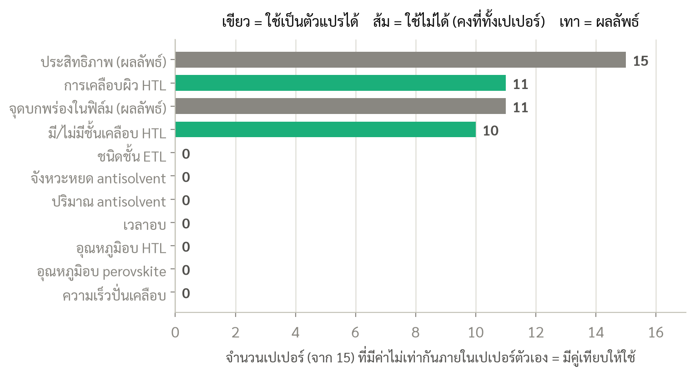
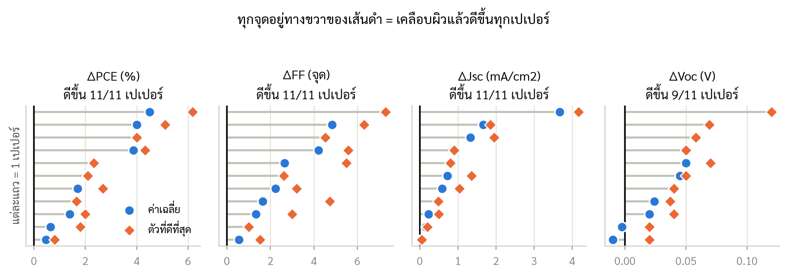

เตรียมข้อมูลเสร็จแล้ว · ยังไม่เริ่มสร้างแบบจำลอง · เจอข้อจำกัดที่ทำให้ต้องปรับคำถามวิจัย
คุณภาพข้อมูลไม่ใช่ปัญหาแล้ว — ปัญหาคือวิธีที่เปเปอร์ออกแบบการทดลอง ทำให้บางคำถามตอบไม่ได้เลย ต่อให้ข้อมูลสะอาดแค่ไหนก็ตาม
heliyon_2024| device | ทำอะไรกับผิว HTL | PCE | เรียกว่า |
|---|---|---|---|
| Sample1 | ไม่ทำอะไร (สูตรมาตรฐาน) | 18.70 | control |
| Sample2 | เคลือบ CsI 5 mg/mL | 19.30 | treated |
| Sample3 | เคลือบ CsI 10 mg/mL | 20.50 | treated |
| Sample4 | เคลือบ CsI 15 mg/mL | 19.40 | treated |
| Sample5 | เคลือบ CsI 20 mg/mL | 18.20 | treated |
control = ตัวเทียบ ไม่ได้ดัดแปลง · treated = ตัวที่ถูกดัดแปลง
ทุกตัวทำในแล็บเดียวกัน คนเดียวกัน สารล็อตเดียวกัน ต่างกันแค่ปริมาณ CsI → เทียบกันได้ตรง ๆ
(สังเกตว่า 20 mg/mL แย่กว่าไม่ใส่เลย)
ไฟล์ Excel 1 ไฟล์ = 1 device (ไฟล์ละ 6 ชีต) → ตารางเดียวที่ 1 แถว = 1 device พร้อมป้อนแบบจำลอง
target_tableเลขชั้นเป็นข้อความคนละแบบ'1.0' กับ '1' |
เชื่อมสองตารางแล้วได้ 0 แถว โปรแกรมไม่ฟ้องเลย เพราะมันมองว่าเป็นคนละค่า |
| ค่าประสิทธิภาพปนกันคนละชุด | ทำให้ค่าที่ควรเท่ากันตามสูตรฟิสิกส์กลับไม่เท่า — ตัวอย่างจริงในสไลด์ 4 |
| แก้หน่วยแล้วตัวเลขไม่ตาม | แก้หน่วยจาก m² เป็น cm² (ต่างกัน 10,000 เท่า) แต่ตัวเลขที่โมเดลใช้จริงยังเป็นค่าเดิม |
| สูตรเตรียมวัตถุดิบรั่วเข้ามา | ขั้นตอนสังเคราะห์ผง NiOx ไม่ใช่ขั้นตอนสร้างเซลล์ แต่ถูกนับรวมเป็นตัวแปร — สไลด์ 4 |
เลือกเปเปอร์ 1 ฉบับ เปิดทั้งตัวเปเปอร์และไฟล์ข้อมูลเสริม แล้วไล่เทียบทุกค่าที่สกัดมา → ตรง 30 จาก 30 ค่า พิสูจน์ว่าการคลีนไม่ได้ทำค่าเพี้ยน
เคสที่ 1 ข้อมูลเสริมระบุว่าอบ “100 °C 30 นาที” แต่ในไฟล์เรามีเคสที่กรอกเป็น 30 ชั่วโมง → แก้แล้ว
เคสที่ 2 เปเปอร์หนึ่งเขียนความเข้มข้น 0.7 M เรากรอกตรงตามต้นฉบับเป๊ะ แต่ถ้าใช้ค่านี้ สูตรเคมีจะผิดหลักฟิสิกส์ (ไอออนเกินสมดุล 39%) → เปเปอร์พิมพ์ผิดจาก 0.07 M
บทเรียน: ตรวจแค่ “ตรงกับต้นฉบับไหม” ไม่พอ ต้องถามด้วยว่า “ค่านี้เป็นไปได้จริงไหม”
เซลล์ 1 ตัวคือฟิล์มบาง 8 ชั้นซ้อนกัน · บันทึกเป็นระบบเลขชั้น ทุก device ใช้โครงเดียวกันหมด จึงเทียบกันได้
เลขคู่ = ชั้นหลัก · เลขคี่กลาง = ชั้นเคลือบผิวบาง ๆ ที่ใส่เพิ่มเพื่ออุดจุดบกพร่องตรงรอยต่อ · ชั้น 7 ทุก device มีหมด (ไม่มีตัวเทียบ) แต่ชั้น 3 มีบ้างไม่มีบ้าง จึงเป็นตัวแปรที่ศึกษาได้
| ตัวอักษรหน้าตาเหมือนกันแต่คนละตัว | μ (กรีก) กับ µ (micro) → คอมพิวเตอร์มองเป็นคนละค่า ต้องยุบเป็นตัวเดียว |
| คำเดียวกันสะกดต่างกัน | Spin coating / spin-coating → ยุบเข้าชื่อมาตรฐาน |
| ตัวเลขติดมากับข้อความ | "400–450 nm" → 425 · หน่วย Å → nm |
| ตัวทำละลาย 27 แบบ | ยุบเหลือ 16 ระบบ แตกเป็นชนิดที่ 1 / 2 พร้อมอัตราส่วน |
| สูตรเคมีของชั้นดูดแสง | คำนวณจาก 2 ทางที่เป็นอิสระต่อกัน → |
ทางที่ 1 — อ่านจากสูตรที่เปเปอร์เขียนไว้ตรง ๆ
(Cs0.05FA0.79MA0.16)Pb(I0.87Br0.13)₃
ทางที่ 2 — คำนวณย้อนจากสารที่ชั่งจริง เช่นเปเปอร์บอก “PbI₂ 324 mg” → หารด้วยน้ำหนักโมเลกุล = จำนวนโมล → รวมไอออนทุกตัว → ได้สัดส่วนกลับมา
สองทางนี้ไม่ได้ใช้ข้อมูลชุดเดียวกัน ถ้าผลออกมาตรงกันแปลว่าเชื่อได้ → ตรงกัน 13 จาก 15 เปเปอร์ และได้สูตรครบทั้ง 44 device
สำคัญเพราะสูตรเคมีมีผลต่อประสิทธิภาพโดยตรง ต้องใส่เข้าโมเดลเป็นตัวควบคุม ไม่งั้นผลของสิ่งที่เราสนใจจะปนกับผลของสูตรเคมี
งานที่ยากไม่ใช่การลบช่องว่างหรือแก้ตัวสะกด แต่คือจุดที่ข้อมูลกำกวม แล้วต้องเลือกว่าจะตีความอย่างไร
เปเปอร์มักรายงานทั้ง เซลล์ที่ดีที่สุด และ ค่าเฉลี่ยหลายเซลล์ ปนกันในตารางเดียว วิธีดึงข้อมูลแบบเดิมคือ “หยิบค่ามากสุดของแต่ละช่อง” ซึ่งทำให้หยิบข้ามชุดกันโดยไม่รู้ตัว
| ค่าที่หยิบมาได้ (device จริงในข้อมูล) | ค่า | มาจากชุด |
|---|---|---|
| Voc — แรงดัน | 1.01 | ค่าเฉลี่ย |
| Jsc — กระแส | 21.82 | ค่าเฉลี่ย |
| FF — ความสมบูรณ์ของกราฟ | 70.97 | ค่าเฉลี่ย |
| PCE — ประสิทธิภาพรวม | 17.28 | เซลล์ที่ดีที่สุด ← คนละชุด |
ตรวจด้วยสูตรฟิสิกส์: 1.01 × 21.82 × 70.97 / 100 = 15.64
แต่ PCE ที่หยิบมาได้คือ 17.28 → ต่างกัน 1.64 ทั้งที่ตามสูตรต้องเท่ากัน
แก้: บังคับให้ทั้ง 4 ค่ามาจากชุดเดียวกันเสมอ → ส่วนต่างเหลือ 0.503 และเพิ่มคอลัมน์กำกับว่าแถวนี้ใช้ชุดไหน
ตรวจซ้ำแล้วพบว่ายังไม่จบ — ส่วนต่างที่เหลือไม่ใช่แค่การปัดเศษ ยังมีการปนอีกชั้นระหว่าง ทิศทางการวัด (reverse กับ forward scan) ใน 5 device · ดูรายงานการตรวจสอบย้อนกลับ ข้อ O
ต้องหยดสารช่วยตกผลึกให้ถูกจังหวะระหว่างปั่นเคลือบ แต่เปเปอร์เขียนคนละมาตรฐาน:
เปเปอร์ A — “หยดที่วินาทีที่ 25 หลังเริ่มปั่น” → บันทึก 25
เปเปอร์ B — “หยดก่อนปั่นจบ 10 วินาที” → บันทึก −10
ถ้าเปเปอร์ B ปั่นทั้งหมด 35 วินาที ค่า −10 ก็คือวินาทีที่ 25 เหมือนกันเป๊ะ
แต่ตัวเลขที่บันทึกไว้ต่างกันคนละขั้ว → เอาไปคำนวณรวมกันตรง ๆ ผิดทันที
แก้: แปลงทุกค่าเข้าแกนเดียวกันก่อน แล้วเก็บเป็นสัดส่วนของช่วงปั่น (0–1) เพื่อให้เทียบข้ามเปเปอร์ที่ปั่นไม่เท่ากันได้
สูตรสังเคราะห์ผง NiOx (เตรียมวัตถุดิบก่อนเริ่มทำเซลล์) ถูกบันทึกปนอยู่กับขั้นตอนสร้างเซลล์ และมีอยู่ในเปเปอร์เดียวเท่านั้น
ถ้าปล่อยไว้ โมเดลจะใช้มันเป็นป้ายชื่อระบุเปเปอร์นั้นได้ทันที แทนที่จะเรียนกลไกจริง
แก้: กรองออก แล้วใส่ระบบตรวจที่จะหยุดทำงานทันทีถ้ามีใครเผลอเอาตัวกรองออกในอนาคต
หลักการ: จะบอกว่า “A ทำให้ B ดีขึ้น” ได้ ต้องมีคู่เทียบที่ต่างกันแค่ A ส่วนอย่างอื่นเหมือนกันหมด
| เปเปอร์ | อุณหภูมิอบ | FF เฉลี่ย |
|---|---|---|
| adma_202507730 (5 device) | 120 °C | 82.1 |
| jechem_2021 (2 device) | 100 °C | 80.8 |
| heliyon_2024 (5 device) | 300 °C | 75.1 |
| d3lf00258f (4 device) | 450 °C | 68.6 |
ดูแล้วชัดมาก — ยิ่งอบร้อน FF ยิ่งแย่ (สหสัมพันธ์ −0.74) เหมือนเจอกลไกสำคัญ
ทุก device ในเปเปอร์เดียวกันใช้อุณหภูมิเดียวกันหมด ไม่มีเปเปอร์ไหนลองสองอุณหภูมิเลยสักฉบับ
แปลว่าเราไม่ได้เทียบ “อบร้อน vs อบเย็น” — เรากำลังเทียบ “แล็บ A vs แล็บ B vs แล็บ C” ซึ่งต่างกันทุกอย่าง · FF ที่ต่ำของ d3lf00258f อาจมาจาก 450 °C จริง หรือจากอะไรก็ได้อีกร้อยอย่างของแล็บนั้น — แยกไม่ออก
confound (ตัวกวน) = ตัวแปรที่เกาะติดมากับตัวแปรที่เราสนใจ จนแยกไม่ออกว่าผลมาจากใคร · ที่นี่คือ “เป็นแล็บไหน” — เกาะแน่น 100% เพราะรู้อุณหภูมิก็รู้แล็บทันที

ใช้เฉพาะ 11 เปเปอร์ที่มีทั้ง control และ treated อยู่ในเปเปอร์เดียวกัน (แบบตัวอย่าง CsI ในสไลด์แรก)
วิธีคิด — ในแต่ละเปเปอร์ เอาค่าของตัวที่ดัดแปลง ลบด้วยค่าของ control ในเปเปอร์เดียวกัน ได้ผลต่าง 1 ค่าต่อ 1 เปเปอร์ แล้วดูว่าทั้ง 11 เปเปอร์ไปทางเดียวกันหรือไม่
เช่นเปเปอร์ CsI จากสไลด์แรก: 20.50 − 18.70 = +1.80 · ทำแบบนี้ครบทุกเปเปอร์

| ตัวชี้วัด | ดีขึ้นเฉลี่ย | ดีขึ้นกี่เปเปอร์ |
|---|---|---|
| PCE — ประสิทธิภาพรวม | +2.09 % | 11/11 |
| FF — ความสมบูรณ์ของกราฟ | +2.62 | 11/11 |
| Jsc — กระแส | +0.72 | 11/11 |
| Voc — แรงดัน | +0.045 | 9/11 |
| จุดบกพร่องในฟิล์ม ยิ่งลดยิ่งดี |
ลดลง | 8/8 |
ถ้าการเคลือบผิวไม่มีผลจริง โอกาสที่ผลจะเป็นบวกครบทั้ง 11 เปเปอร์โดยบังเอิญ ≈ 0.1% (เหมือนโยนเหรียญ 11 ครั้งออกหัวหมด)
และเห็นสาเหตุด้วย: จุดบกพร่องลดลงทุกเปเปอร์ที่วัด → ประจุไหลดีขึ้น → FF ขึ้น → PCE ขึ้น
เปเปอร์มักตีพิมพ์เฉพาะการทดลองที่สำเร็จ ผล 11/11 จึงอาจสวยเกินจริง — แต่ข้อมูลเราเองมีคำตอบ: CsI 20 mg/mL และ EMIMI 4% แย่กว่าไม่ทำเลย · ปริมาณต้องพอดี
คำถามเดิมตอบไม่ได้ ไม่ใช่เพราะข้อมูลไม่พอ แต่เพราะไม่มีเปเปอร์ไหนออกแบบการทดลองมาให้ตอบได้
ค่าตั้งต้นที่ได้จากวรรณกรรม: ปั่น 4000 rpm · อบ 100 °C 30 นาที · หยดสารช่วยตกผลึกที่ราว 50–75% ของช่วงปั่น · เริ่มลองจากสารกลุ่ม SAM ซึ่งให้ผลดีที่สุดในข้อมูล
ถึงแม้ยังไม่ได้เริ่มสร้างแบบจำลอง ข้อมูลที่มีตอนนี้ก็บอกอะไรกับการทดลองจริงในแล็บได้แล้ว 4 เรื่อง
4 ข้อนี้ใช้ได้เลยโดยไม่ต้องรอผลแบบจำลอง — เป็นการแปลงสิ่งที่พบให้เป็นคำแนะนำสำหรับการทดลองจริง
กลไกที่พบคือ จุดบกพร่องลด → FF ขึ้น → PCE ขึ้น แปลว่าไม่ต้องรอวัด PCE อย่างเดียว วัดจุดบกพร่องด้วย SCLC ได้ตั้งแต่ต้น · สารตัวไหนลดจุดบกพร่องไม่ได้ ตัดทิ้งได้เลยโดยไม่ต้องทำครบทุกขั้น → คัดกรองเร็วขึ้นมาก
สองเปเปอร์ที่ไล่ความเข้มข้นเป็นเส้นโค้งคว่ำทั้งคู่ และปริมาณสูงสุดแย่กว่าไม่ใส่เลย (CsI 20 mg/mL · EMIMI 4%) → สิ่งที่ได้ผลคือ “เคลือบในปริมาณที่พอดี” ไม่ใช่ “เคลือบ” · ออกแบบการทดลองเป็นชุดไล่ความเข้มข้น ห้ามลองค่าเดียวแล้วสรุป
ผลจริงจาก 11 เปเปอร์อยู่ระหว่าง +0.80 ถึง +6.18 (ต่างกัน 8 เท่า) → ได้ +2 ถือว่าปกติ ไม่ใช่ล้มเหลว · และช่วงที่กว้างขนาดนี้บอกว่า การปรับจูนสำคัญกว่าการเลือกสาร เพราะสารทุกตระกูลให้ผลบวกได้ทั้งนั้น
ไม่มีหลักฐานว่าการไล่จูนความเร็วปั่นหรืออุณหภูมิจะให้ผลคุ้ม และวรรณกรรมชี้ว่าทุกแล็บตั้งค่าใกล้เคียงกันอยู่แล้ว → ทรัพยากรควรลงที่การเคลือบผิว ไม่ใช่ไล่พารามิเตอร์
| ชุดตัวอย่าง | จำนวนโดส | สิ่งที่วัด |
|---|---|---|
| control — ไม่เคลือบ | — | ตัวเทียบของทุกชุด |
| สาร A — ตระกูล SAM | 3–4 | PCE และ จุดบกพร่อง (SCLC) ทุกตัว |
| สาร B — ตระกูลเกลือไอออน | 3–4 | |
| สาร C — ตระกูลโมเลกุลอินทรีย์ | 3–4 |
ทำแบบนี้แล้วตอบได้ทั้งสองคำถามที่วรรณกรรมตอบไม่ได้ — สารตระกูลไหนดีกว่า (เพราะอยู่แล็บเดียวกัน จึงไม่มีตัวกวน) และปริมาณที่เหมาะของแต่ละตัวคือเท่าไร
ต้องเก็บเปเปอร์เพิ่มด้วยเกณฑ์เฉพาะ คือเปเปอร์ที่เทียบสารต่างตระกูลกันในฉบับเดียว ไม่ใช่เก็บเปเปอร์เพิ่มทั่ว ๆ ไป เพราะเปเปอร์ทั่วไปจะซ้ำรูปแบบเดิม (สารตระกูลเดียว + control) แล้วก็ตอบไม่ได้อยู่ดี
ยืนยันทาง 1 เป็นทางหลักได้ไหม · เก็บทาง 3 ไว้เป็นภาคผนวก · เปิดทาง 2 ไว้ทำต่อถ้ามีเวลาเหลือหลังผลของทาง 1 ออกแล้ว